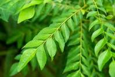

Curry leaves (Murraya koenigii) or sweet neem leaves are extensively used in India for culinary and
medicinal purposes.
They are small green leaves with a unique flavour and aroma.
They are widely used as a seasoning in South Indian dishes like sambhar, rasam, chutney, etc.
Nutritional Value of Curry Leaves
100 grams of curry leaves provide around 108 calories of energy. They are rich in carbohydrates, proteins,
fibre, calcium, phosphorus, iron and other minerals.
They also contain vitamins like vitamin A, vitamin B, vitamin C, vitamin E, etc
It is one of the rich sources of iron, potassium, and manganese which improves haemoglobin levels and
promotes
brain function
Mint leaves are low in calories and contain a minimal amount of protein and fat so you can add mint leaves
in
your weight loss diet program easily
Health Benefits of Mint Leaves Are:
Science has proven that mint has plenty of health benefits for your body.

Here are some of the best ways that you can use mint to help your body stay healthy.
Powerful antioxidant
May reduce the risk of cancer
Reduces risk of heart diseases
Helps in the management of diabetes
Help deal with stomach ailments
Effective against morning sickness
Analgesic
Neuroprotective effects
Kills bacteria
Hepatoprotective effects
Curry leaves are also known as
Meetha neem
Kadi patta
Kadhi limbdo
Kadhi limbu
Girinimba
Krishnanimba
Karuveppilai
Karapincha
Curry vepillai
Kari bevu
Karivepaku
GROWING
Native to India, the fast-growing curry tree is a small evergreen bush or tree that can reach anywhere from six
to 20 feet tall. The most widely known part of the curry tree is its aromatic, spicy foliage, comprised of many
leaflets. The leaves are pinnate and form alternately on the stem. They are best harvested when fresh.
The tree produces fragrant white flowers, which develop into small, black fruits similar to berries. Unlike the
leaves, they are not suitable for consumption. Curry tree is best planted in the spring.
Summary
According to science, mint is an amazing herb with a lot of benefits. You can’t go wrong by adding mint in your
diet as it is full of antioxidants, vitamins, iron, and so on. In simple words, include mint in your diet if you
want to stay healthy and happy.
Read More: 10 Amazing Health Benefit of Curry Leaves!